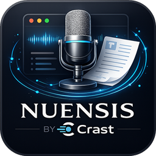
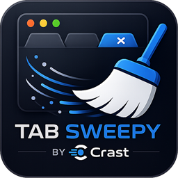

Small tools that make your day easier
A set of free, simple tools from Crast for VAs, remote workers, and honestly anyone. No account, no subscription, no catch. They run on your own machine, so your stuff stays yours. Download one and go.

Nuensis Transcriber by Crast
Free live transcription for meetings, calls, and anything you can hear.
The problem. You're on back-to-back calls and can't really listen and take notes at the same time. The paid transcription apps want a monthly subscription, an account, and they upload your audio to their servers.
What Nuensis does. It turns anything playing on your PC, video calls, meetings, webinars, YouTube, podcasts, into a live text transcript that saves itself automatically as a plain text file. It runs entirely on your own computer using Windows' built-in Live Captions, so nothing is sent to the cloud. Flip on "Include my microphone" and type your name, and it labels your own voice separately from the other people on the call.
- Live transcript that saves as you go, no copy-pasting.
- Label your voice vs. everyone else on the call.
- Transcribe an uploaded audio file too (fast or high-accuracy).
- 100% local. No account, no cloud, no subscription.
Windows 11 only, since it uses Live Captions (a Windows 11 feature). The first time you record, Windows downloads a small speech model once. Windows may show a "protected your PC" box on first launch, just click More info then Run anyway.

Tab Sweepy by Crast
Find and close duplicate browser tabs in seconds.
The problem. If you live in your browser, you end up with the same page open five times, a wall of tabs you can't read, and a laptop fan that never stops. Closing them one by one is a chore.
What Tab Sweepy does. One click finds every duplicate tab across your windows and closes the extras, keeping one of each. You get your tab bar (and your memory) back in a second. It runs entirely in your browser, with no account, no cloud, and no tracking.
- Close duplicate tabs in one click.
- Four ways to match: exact page, ignore tracking junk, same site, or same web app.
- A simple dashboard so you see what's about to close.
- 100% in your browser. Nothing leaves your machine.
This is a browser extension, so you add it once through your browser. Unzip the folder and keep it somewhere, open chrome://extensions (or edge://extensions), turn on Developer mode, click Load unpacked, and pick the unzipped folder. Full step-by-step is in the READ ME inside the download.
More free tools are on the way
Crast builds simple, local tools that quietly make remote work less annoying. These two are free, and there's more coming.
Got an idea or a bug? Email support@crastapp.com.